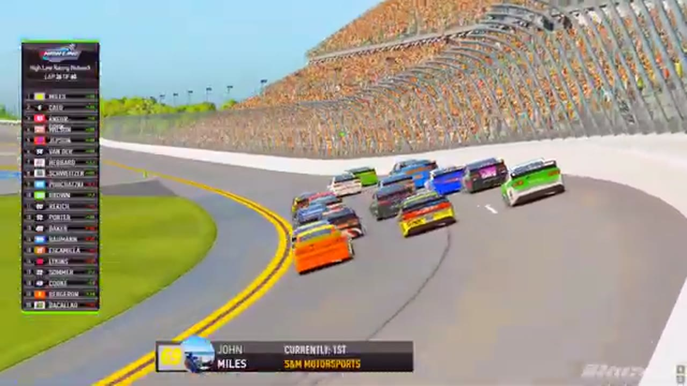

Ryan Wilson
Team assignment not stated in the structured owner record.
A PODIUM FILE WITH AN OPEN RESULT HORIZON
- Official files
- 17
- Central editions
- 4
- Exact tape cues
- 17
- Accepted podiums
- 2
Ryan Wilson has 2 position-specific top-three receipts: S2 R1 at Daytona (P3); S1 R12 at Daytona (P2). No feature win is currently supported in the accepted result ledger. A consistently stated team affiliation remains open for owner review. The currently indexed source window runs from November 17, 2025 through July 20, 2026.
The official tape index connects the name to 17 race files, 4 Central editions, and 17 primary-broadcast navigation cues. The densest direct-tape categories are battle (4 cues) and interview (3 cues). Those counts describe where the name is easiest to find; they are not fault, pace, or performance grades. A source-attributed car frame is published with its original video and timestamp. That is the current discovery map for Ryan Wilson.
That is enough for a real result dossier without pretending the archive knows every start or finish. Owner classifications can extend the record later through the same stable race IDs. Separately, 11 Highline Live files sit on the bonus shelf and never enter the official season ledger. The displayed name is labeled transcript normalized; that status remains visible so an owner roster can strengthen or correct the identity without rewriting the evidence trail. Those boundaries define Ryan Wilson's public HLRN file.
10 featured race-tape cues
These are discovery routes into complete HLRN broadcasts, not performance grades or inferred results.
- S2 / R1 · RESULT
Ethan Moreno is confirmed atop the Daytona results
The Season 2 Daytona results readout records Ethan Moreno first, Brandon Showers second, and Ryan Wilson third.
Daytona - S2 / R1 · FINISH
Ryan Wilson and Ethan Moreno enter the final-lap decision
S2 / R1 at 2:52:31: The white flag opens the final-lap decision at Daytona, with Ryan Wilson, Ethan Moreno, and Grant Wesley named in the decisive group. The cut continues through the immediate finish call on the full primary broadcast.
Daytona - S1 / R16 · STAGE
The Talladega finale reaches its Stage 2 countdown
S1 / R16 at 1:25:23: The broadcast enters a stage-scoring discussion at Talladega with Trevor Haley and Ryan Wilson in the scoring call. The clip preserves the on-air timing or points call without promoting it into a complete stage result; the accepted feature result ledger remains separate.
Talladega - S2 / R4 · BATTLE
Bryce Hinton and Ryan Wilson carry the EchoPark Speedway lead battle
S2 / R4 at 3:15:58: The EchoPark Speedway pack compresses in a front-pack fight while Bryce Hinton and Ryan Wilson are named on the call. The chapter keeps the live battle intact and makes no finishing-order claim.
EchoPark Speedway - S1 / R16 · BATTLE
Ryan Wilson works the Talladega lead pack
S1 / R16 at 1:21:06: The Talladega pack compresses in a front-pack fight while Ryan Wilson are named on the call. The chapter keeps the live battle intact and makes no finishing-order claim.
Talladega - S1 / R3 · BATTLE
The Charlotte lead pack goes three wide
S1 / R3 at 1:26:55: The Charlotte pack compresses three wide while Ryan Wilson are named on the call. The chapter keeps the live battle intact and makes no finishing-order claim.
Charlotte - S1 / R1 · BATTLE
Zack Cato and Ryan Wilson carry the Daytona lead battle
S1 / R1 at 54:32: The Daytona pack compresses in a front-pack fight while Zack Cato and Ryan Wilson are named on the call. The chapter keeps the live battle intact and makes no finishing-order claim.
Daytona - S2 / R1 · INTERVIEW
Ryan Wilson gives Daytona a late booth account
S2 / R1 at 2:49:30: Ryan Wilson joins the HLRN booth for a first-person race account. The interview is preserved as context and does not create a placement claim outside the accepted result ledger.
Daytona - S1 / R15 · INTERVIEW
Ryan Wilson gives an in-race account from the IRSS booth
S1 / R15 at 2:00:05: Ryan Wilson joins the HLRN booth for a first-person race account. The interview is preserved as context and does not create a placement claim outside the accepted result ledger.
iRacing Superspeedway - S1 / R5 · INTERVIEW
Ryan Wilson joins the booth before the restart
S1 / R5 at 1:21:53: Ryan Wilson joins the HLRN booth for a first-person race account. The interview is preserved as context and does not create a placement claim outside the accepted result ledger.
Watkins Glen
Recent editions connected to Ryan Wilson
Moreno Restarts the Story at Daytona
Prime X swept the stage points, but Ethan Moreno abandoned Ryan Wilson on the final run and restored Darkhorse to Victory Lane.
S1 / R16Applegate Wins After Haley's DQ
Trevor Haley reached the stripe first, but HLRN's review removed the No. 12 for a below-yellow-line advance and contact, elevating David Applegate.
S1 / R12Brown Survives Daytona
A final-lap wreck removed the front group and opened the lane for Matt Brown, Ryan Wilson, and Ricky Miles.
S1 / R1Porter Opens the Highline Era
Bryce Hinton banked the first stage, but Jaden Porter delivered Darkhorse the inaugural feature win at Daytona.
Verified team history is not consistently stated. Complete starts, finishes, and points remain open beyond the recovered results. Name normalization remains reviewable against owner records.